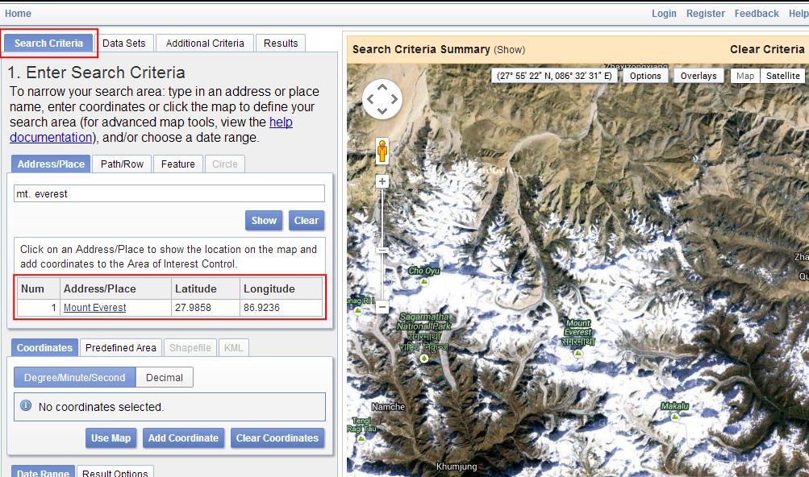
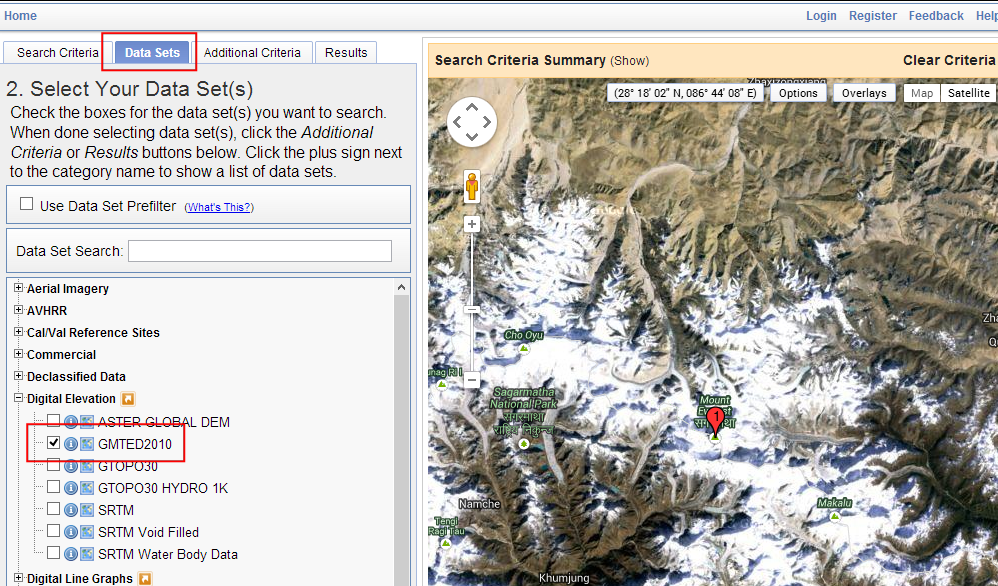
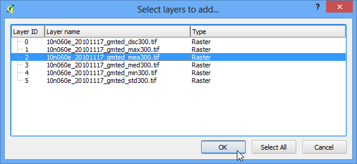
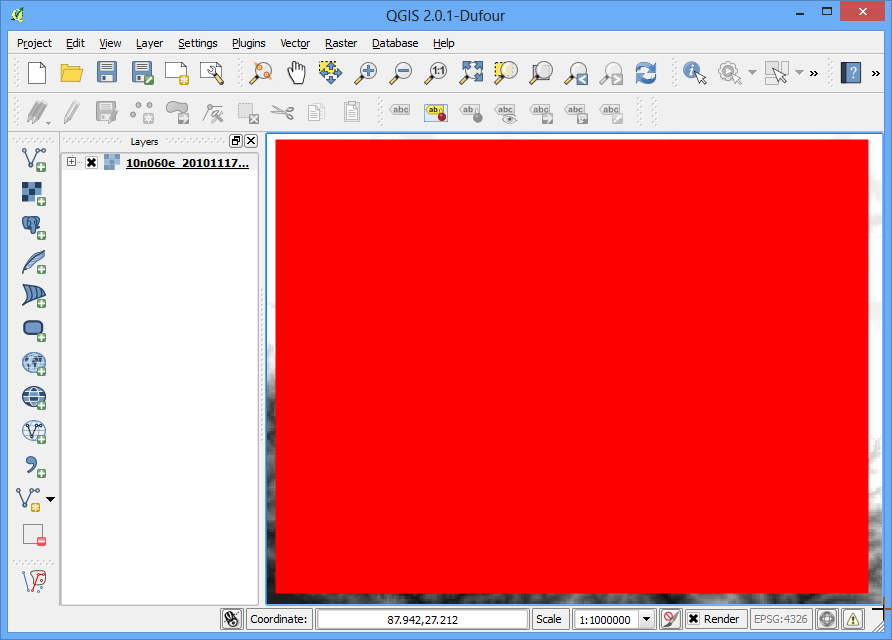
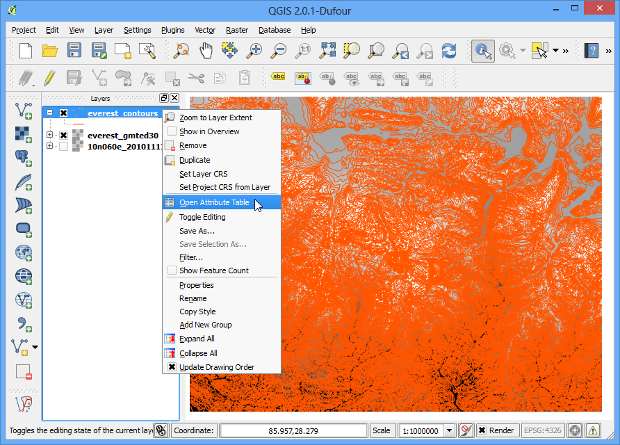

Робота з даними рельєфу
Дані рельєфу або висот бувають корисні в багатьох застосуваннях GIS аналізу і часто використовуються в мапах. QGIS має хороші вбудовані можливості для обробки мап висот. В цьому уроці, ми відпрацюємо всі кроки по створенню різних похідних даних від карт висот, таких як контури, відмивання тіней і т.д.
Огляд завдання
Задачею є створення карт контурів і затінення схилів для області довкола гори Еверест.
Отримання даних
Ми будемо працювати із набором даних GMTED2010 від USGS. Ці дані можна завантажити із сайту USGS Earthexplorer site. GMTED (Global Multi-resolution Terrain Elevation Data) це глобальний набір даних рельєфу, що є новою версією бази даних GTOPO30.
Ось приклад як здійснюється пошук і завантаження релевантних даних із ресурсу USGS Earthexplorer.
Перейдіть у USGS Earthexplorer . На вкладці Search Criteria, знайдіть місцевість за назвою Mt. Everest. Натисніть на результат, щоб вибрати місцевість.

На вкладці Data Sets, розгорніть групу Digital Elevation, і виберіть GMTED2010.

Тепер ви можете перейти до вкладки Results і переглянути частину набору даних, який відповідає вашому критерію пошуку. Натисніть кнопку Download Options. Вам доведеться увійти на сайт для цього етапу. Ви можете створити собі безкоштовний обліковий запис, якщо в вас такого немає.

Виберіть пункт 30 ARC SEC і натисніть Select Download Option.

У вас буде файл, який називається GMTED2010N10E060_300.zip. Дані висот розповсюджуються в різних растрових форматах, таких як ASC, BIL, GeoTiff і т.д.. QGIS підтримує багато растрових форматів <http://www.gdal.org/formats_list.html>`_ завдяки бібліотеці GDAL. Дані GMTED мають формат GeoTiff, які знаходяться в zip архіві.
Для зручності ви можете завантажити копію даних напряму із вказаної нижче адреси.
GMTED2010N10E060_300.zip
Джерело даних: [GMTED2010]
Виконання
Відкрийте меню і виберіть завантажений zip файл.

Там є декілька різних файлів побудованих за допомогою різних алгоритмів. В цьому уроці, ми використаємо файл, що називається 10n060e_20101117_gmted_mea300.tif.

Ви побачите дані карти висот зображені в області роботи QGIS. Кожен піксель на растровому зображенні рельєфу представляє собою середню висоту в метрах в даних координатах. Темні пікселі показують малу висоту а світлі пікселі показують області з більшими висотами.

Давайте знайдемо область що нас цікавить. Із Вікіпедії, ми знаходимо, що координати області що нас цікавить - гори Еверест - знаходяться в координатах 27.9881° N, 86.9253° E. Відмітимо, що QGIS використовує координати в форматі (X,Y) , тому ви повинні використовувати координати в форматі (Довгота, Широта). Вставте 86.9253,27.9881 в нижню частину вікна QGIS де є напис Coordinate і натисніть клавішу Enter. Область видимості буде центрована в цих координатах. Для збільшення, введіть 1:1000000 в полі Scale і натисніть клавішу Enter. Ви побачите, що область видимості наблизилася до місцевості поблизу Гімалаїв.

Ми обріжемо растр до області інтересу. Виберіть інструмент Clipper із меню .
Примітка
Меню Raster в QGIS приходить від основного плагіну, що називається GdalTools. Якщо ви не бачите меню Raster, ввімкніть плагін GdalTools у меню . Дивіться Використання додатків для більш докладної інформації.

У вікні Clipper назвіть ваш вихідний файл everest_gmted30.tif. Виберіть у полі Clipping mode варіант Extent.

Залиште вікно Clipper відкритим і перейдіть до головного вікна QGIS. Натисніть і утримуйте ліву кнопку миші і намалюйте на екрані прямокутну область, яка покриє усе полотно.

Тепер поверніться у вікно Clipper , ви побачите авто-заповнені координати вибраної вами області. Переконайтеся, що опція Load into canvas when finished вибрана і натисніть OK.

Як тільки процес завершиться, ви побачите новий шар, що завантажився в QGIS. Цей шар покриває лише область довкола гори Еверест. Тепер ми готові генерувати контури. Виберіть інструмент для роботи з контурами в меню .

В діалоговому вікні Contour виберіть everest_gmted30 в якості вхідного файлу в полі Input file. Назвіть вихідний файл в полі Output file for contour lines як everest_countours.shp. Ми згенеруємо контурні лінії з інтервалом 100 метрів, тому введіть значення 100 в поле Interval between contour lines. Також перевірте опцію Attribute name, щоб значення висоти були записані в якості атрибуту до кожної контурної лінії. Натисніть кнопку OK.

Після того як обробка буде завершена, ви побачите контурні лінії завантажені в область видимості. Кожна лінія на цьому шарі представляє конкретну висоту. Всі точки на контурній лінії в нижньому растрі будуть мати ту саму висоту. Чим ближче лінії, тим крутіший схил. Давайте дослідимо контури трохи більше. Правою кнопкою миші натисніть на шар контурів і виберіть Open Attribute Table.

Ви побачите, що кожен об’єкт має атрибут, який називається ELEV. Це висота в метрах, якій відповідає кожна лінія. Натисніть на заголовок колонки декілька разів аби відсортувати значення в порядку зменшення. Тут ви знайдете лінію, яка представляє найбільшу висоту в наших даних. тобто це і є гора Еверест.

Виберіть верхній рядок і натисніть кнопку Zoom to selection.

Перейдіть до головного вікна QGIS. Ви маєте побачити вибрану контурну лінію пофарбовану жовтим кольором. Це є найвища область в нашому наборі даних.

Тепер давайте створимо карту відмивання тіней із растру. Виберіть меню .

У діалоговому вікні DEM (Terrain Models), виберіть everest_gmted30` в якості вхідного файлу в полі Input file. Назвіть вихідний файл Output file як everest_hillshade.tif. Виберіть Hillshade в якості режиму Mode. Залиште всі інші опції як є. Переконайтеся що вибрана опція Load into canvas when finished, і натисніть OK.

Як тільки завершиться процес, ви побачите інший растр завантажений на полотно QGIS. Оскільки ви можливо збільшили область біля Евересту, натисніть правою кнопкою миші на шар everest_hillshade і виберіть Zoom to Layer Extent.

Тепер ви побачите повнорозмірний растр із затіненням схилів.

Ви також можете візуалізувати ваш контурний шар і пересвідчитись що ваш аналіз правильний, експортувавши контури у формат KML і переглянути його в Google Earth. Натисніть праву кнопку миші на вашому контурі і виберіть Зберегти як....

Виберіть Keyhole Markup Language [KML] в якості формату в полі Format. Назвіть ваш вихідний файл як contours.kml і натисніть OK.

Знайдіть отриманий файл на вашому диску і за допомогою подвійного кліку мишкою відкрийте його в програмі Google Earth.